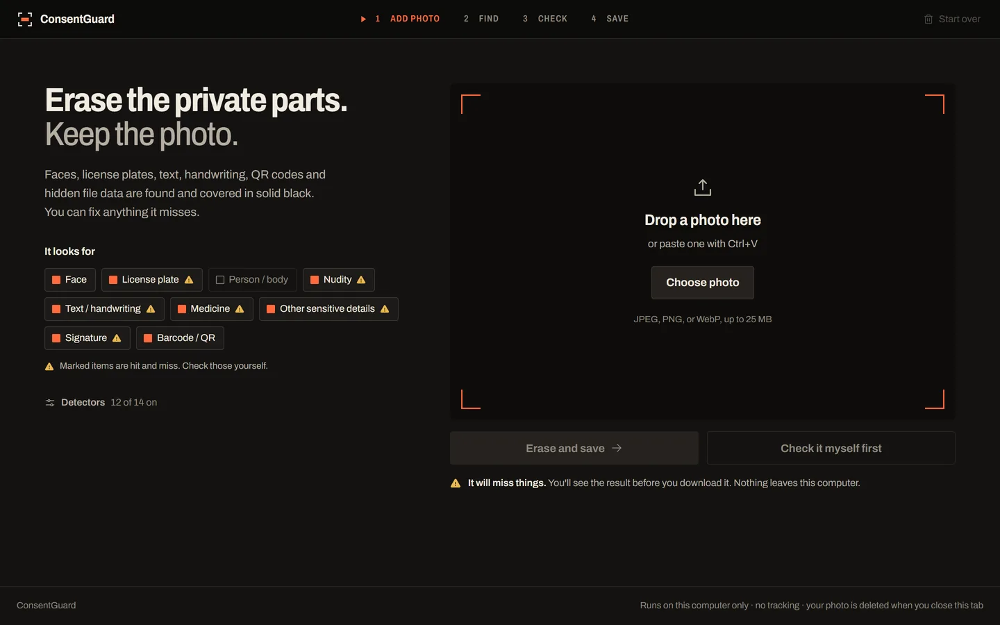
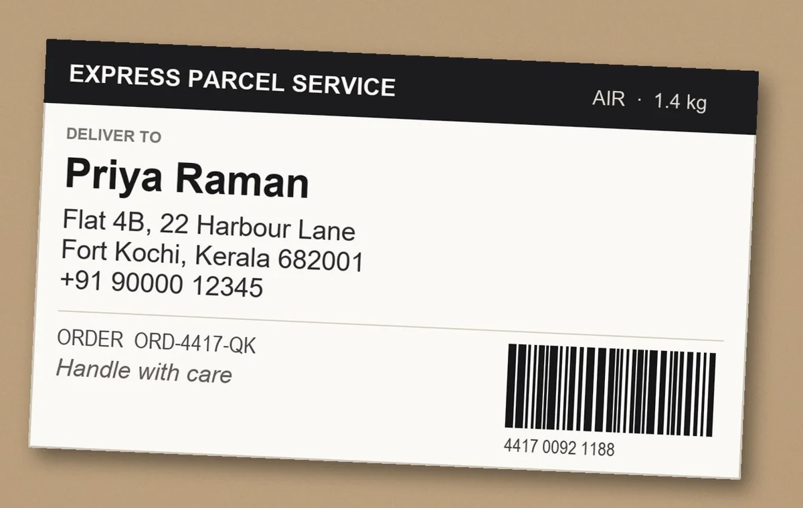
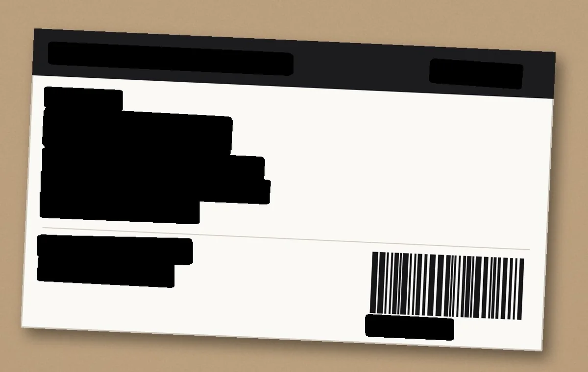
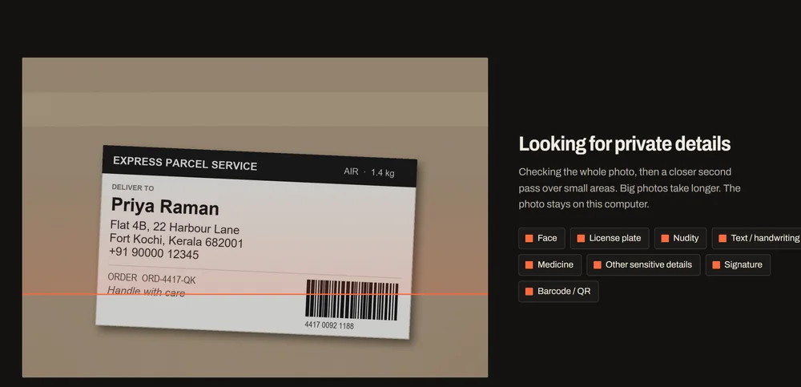
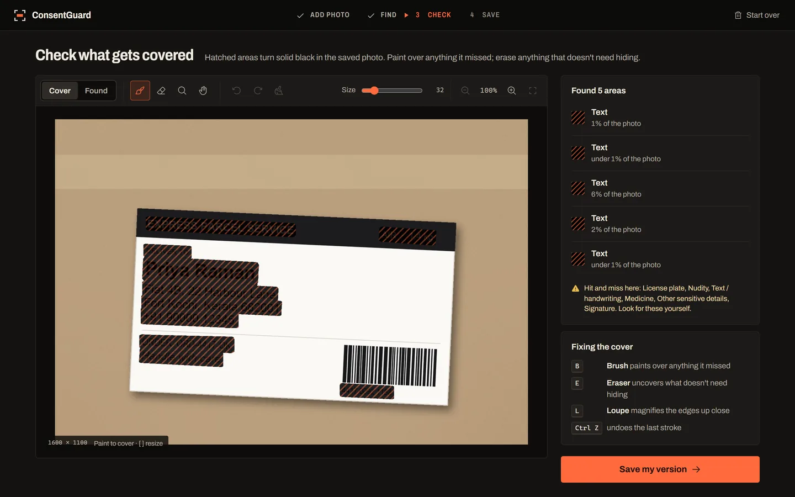
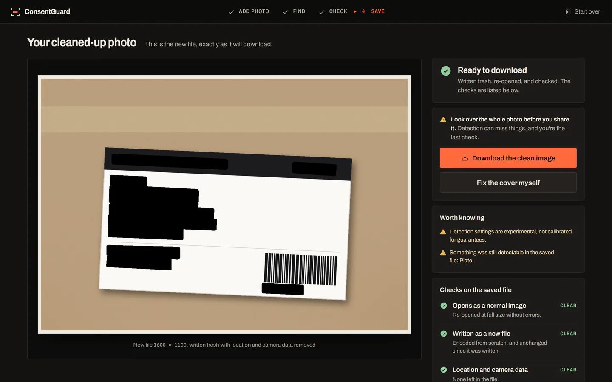

1
Add a photo

Drop it, paste it with Ctrl V, or pick a file. What it looks for is listed in the open, so you can switch any of it off.
Faces, number plates, text, handwriting and codes, covered in solid black. The camera and location data stripped. A clean copy written from scratch, on your own machine, with nothing uploaded.


Windows, PowerShell, a Python environment No account, no network calls, no telemetry Your working copy is deleted when you close the tab
Real screens, running the real detectors on the parcel above. scroll the sheet

Drop it, paste it with Ctrl V, or pick a file. What it looks for is listed in the open, so you can switch any of it off.

Detectors cross the whole picture, then make a second, closer pass over small areas. Nothing leaves the machine while they run.

Hatched black is exactly what gets saved. Paint over a miss, erase an over-reach, and use the loupe on the edges: B E L.

The file is written fresh, re-opened and scanned again. Every check is listed in plain words, and you decide it is safe to share.
Most tools tell you what they catch. This is the whole scorecard from 120 validation photos the models never trained on, worst first, with the bad rows left in.
The bar and the number are the same measurement: how often a whole face, plate or signature was caught at all.
The line under each row says how much of that thing's area ends up covered when it is caught, which is usually much higher.
All text goes, by design. On 30 validation photos with nothing private in them, every one had something erased, 45% of each photo on average. Switch text off when you only want faces and plates gone.
On the parcel photo above, the re-check said a number plate might still be visible in the saved file. There is no plate in that picture — the white label is plate-shaped. You get told, rather than quietly passed.
Detection is automatic and never complete, so the reminder to look at the photo sits next to the download button, and the app labels the content types it is bad at instead of pretending otherwise.
Download release 1.0 and unzip it, or clone the same code:
git clone https://github.com/Nikhi00718/consent-guard.git cd consent-guard
First time only, to build the Python environment and load the detectors:
powershell -ExecutionPolicy Bypass -File main_project\scripts\stage_02_baseline_model\setup_environment.ps1
Every time after that. The detectors load in about a minute, then it opens at http://127.0.0.1:7860:
powershell -ExecutionPolicy Bypass -File main_project\scripts\stage_05_review_export\start_consentguard.ps1
-ExecutionPolicy Bypass lets Windows run these two scripts from the folder you unzipped, without changing that setting for anything else. Both scripts are in the repository, and you can read them before you run them.
Then look at every photo before you share it. That part is still yours.